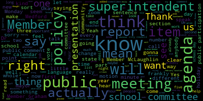
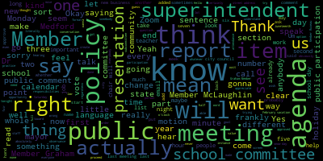

total time: 18.17 minutes
total words: 2665
{kind=link}
total time: 62.16 minutes
total words: 9046

{kind=link}
total time: 16.04 minutes
total words: 3131
{kind=link}
total time: 12.4 minutes
total words: 1640

[Graham]: Hi, everyone.
[Ruseau]: Hello. You know, let me just check in with Member McLaughlin real quick, because I know that she may not be able to make it. Hi, everyone. Sorry for the delay. We're just waiting to see if one more member will join us. And if she can't, we can start without her. All right, I think we should get started. Wait a second, I just see she just got the message. All right, well, we'll get started. I'm gonna actually share my screen out so that I can see you and do the, You can share. Click on the wrong part of that little share icon every time. All right, Chrome. All right, it's 4.03. Thank you all for coming tonight. I'm going to call to order the Rules Policy and Equity Subcommittee meeting of the Medford School Committee. And then I will get to the, actually, do I read the agenda first or after I take attendance? I always forget that. Does it matter?
[Graham]: I think you read this first and then do attendance.
[Ruseau]: Okay, thank you, sorry. So this is to all interested parties from me and the other members. Please be advised that on Wednesday, June 9 2021 from four to 6pm there will be a rules policy and equity subcommittee meeting held through remote participation via zoom pursuant to Governor, we probably need to get this language updated as I'm reading it since I think these ended right, or, but I'll just read it anyways because that's what's on the agenda but pursuant to Governor Baker's March 12 2020 order suspending certain provisions of the open meeting law. and the governor's March 15th, 2020 orders imposing strict limitations on the number of people that may gather in one place. This meeting of the Medford School Committee will be conducted via remote participation to the greatest extent possible. Specific information and the general guidelines for remote participation by members of the public and or parties with a right and or requirement to attend this meeting can be found on the City of Medford website. For this meeting, members of the public who wish to listen or watch the meeting may do so by accessing the meeting link contained herein. No in-person attendance of members of the public will be permitted, but every effort will be made to ensure that the public can adequately access the proceedings in real time via technological means. In the event that we are unable to do so, despite best efforts, we will post on the City of Medford or Medford Community Media website an audio or video recording, transcript, or other comprehensive record of proceedings as soon as possible after the meeting. The meeting can be viewed through Medford Community Media on channel Comcast channel 22, Verizon channel 43 at four o'clock. Since the meeting will be held remotely, participants can log in or call in by using the following links or call in number. The Zoom is https://nps02155-org.zoom.us slash j slash 96851394965. Or you can call in by dialing 1312-626-6799. And the meeting ID is 9685134965. Additionally, questions or comments can be submitted during the meeting by emailing me at pruseau at medford.k12.ma.us. The submitting must include the following information, your first and last name, your Medford Street address, your question and or comment. I will take the attendance now. Member Graham.
[Unidentified]: Here.
[Ruseau]: Member McLaughlin. I don't know if she is here. I'll mark her absent for now. And Member Ruseau, here to present, we have Quorum. All right, so our agenda for tonight we have three items. The first one is to review policy I see I see a the school year calendar which we actually just approved in December of 2020. And during that somewhat lengthy process we we acknowledge that we. probably weren't gonna get it exactly right the first time out, cause it was a pretty substantial change from past practice. We created something we call variable date observances. Actually, I'll bring that policy up. So we created, let me scroll down to that part, it's up here. So we've created three different categories for each of the items on the observance list. We have no school days, which I think everybody knows what a no school day is, an excused absence day, which is not new, and a blocked day, which means that we are essentially forbidding school-related events that are school-sponsored to occur on those days, in particular, major tests and exams, et cetera. And then, so that, I take it back. Those three types of categories existed already. They were not explicit in the old policy. What we have also done here is we've created an observance list that will help the superintendent roll this out each November. We have what we call static date observances. So date observances that occur on a specific date, kind of obvious. And then there's a whole host of observances that occur on different kinds of calendars, whether it's a lunar calendar or I believe the, well, I don't know all the different calendars. I won't pretend to know all that, but these are all calendar types, observance types that actually have a different date each year. So they have to kind of be looked up before they can be put into the calendar. So, We are here to discuss the addition, if that's how the members here and then the full school committee wants to go, of three additional days. I will preface that by saying that what our current calendar does not actually seem to have is anything related to snow days. The current process as I understand it is that the superintendent, and I don't know if this is across the whole state or just a historical Medford thing, but seven snow days are built into our calendar each year. And other than Snowmageddon five years, six years ago, there's just been no need for such a massive number of days added into the calendar. So I, What I'm proposing in this is that we add the two Eid, and I probably should have learned how to say them before, Al-Fitr and Eid al-Adha, as well as Lunar New Year as full-blown, moving them from the excused absence list to being a no school type of observance beginning in the 2022-2023 school year. We've already released the calendar for this year, so I don't think it would be, possible to make that kind of a change, considering we won't even be actually discussing this until the 14th, if it passes. So, Member Graham, do you have any commentary before I go to the other folks?
[Graham]: I see Dr. Cushing has his hand in the air, so I'll have to defer to him.
[SPEAKER_08]: Dr. Cushing.
[Cushing]: I only wanted to say that the five days that it's state law that you actually build those into your calendar or state regulation from DESE that you have to schedule for 185 days of school while required to have 180. So those five days are supposed to be on your calendar.
[Graham]: And Dr. Cushing, we currently scheduled for seven, is that right?
[Cushing]: No, I think I've only seen five on our current calendar. It's just on the other side of my office. Uh, so right now, as of now, we will get out next year. Um, if all goes well and there were no snow days, we will get out on the summer solstice, June 21st. Um, the five days, um, it's, it ends up being seven calendar days when you do the five school days. Um, then we will be out on June 28th. Got it. if we enact those five days. If we were to add three days, just take for a hypothetical here, I'm not offering any commentary. I'm only saying if we were to add another three days of no school, and we did have five snow days, we would be unable to fulfill the 180 day requirement based on where the dates fall next year, as just a hypothetical, because right now, after those five days, there's only the 29th and the 30th. And any snow day prior to April 1st has to be made up per DESI.
[Ruseau]: Okay, so, One thing I didn't do was physically bring a calendar to this is one of those times when paper can be very helpful. So, can you can you just be a little more clear like if we added three days and then had the five days that literally is impossible.
[Cushing]: Well, based on next year's calendar, what I'm looking at, we only have two additional days, the 28th and the, I'm sorry, the 29th and the 30th of June available. So if we were to go through five snow days and next year had an additional three days off, we essentially would have one unaccounted for day because we would be at June 30th based on, just based on the initial glance of this. I'm not saying, and please, I'm not saying.
[Ruseau]: No, I know you're not offering an opinion actually on that. I guess, one of the other challenges with the variable date observances and we have, is that some of these dates in some years will land when we don't have school. So it's one of those things where, We don't want a policy that some years works and some years doesn't work, obviously, because then the superintendent's gonna have to come to us in November and say, I followed the policy, we have to go to school until July 1st. Or worst case, July 3rd, if Monday is, if the first were a Saturday, for instance.
[Cushing]: You do not under state law go into fiscal year.
[Ruseau]: No, no, yeah, no, I know. I mean, if the superintendent followed the policy, played it all out, and was like, we don't have a calendar that can be approved because of that. I don't want the policy to be functional most years, but on occasion, not functional. That's sort of my point. You know, Juneteenth this year, for instance, is on a Saturday. And we got lucky because Juneteenth was added after our last calendar was approved. And it's the no school day if it had been Any of the six other days of the week, we would have had to use a snow day, essentially, because we would have had to take it off, but the last calendar did not consider it. Okay, so two days right now is the maximum is what I'm hearing we can fit, unless we are going to address the bigger issue of February vacation, which I don't think we can cover tonight, because it's not on the agenda, but also because It's a multi-community effort is how I understand other communities have addressed the February vacation problem.
[Graham]: And remember, so I would like to hear if there's anyone who has joined us who has thoughts about these particular holidays.
[Ruseau]: Absolutely, thank you. Ms. Weiss, if you could just notate that Member McLaughlin has joined us and I see a hand up. Michael, could you state your name and address or just your Medford Street address for the record, please? Yeah. Oops, I might've muted you or unmuted you.
[Bernstein]: Hi, Michael Bernstein, Lyman Avenue, Medford. Thank you for allowing me the opportunity to speak. I wanted to just clarify, while June 19th is on a weekend this coming school year, it's being observed as a closed school day, as a no school day on the 20th. So that did actually affect the calendar for next year, unless there's some other reason why June 20th is designated as a no school day.
[Ruseau]: Sorry, Michael. the 2021 calendar year, the 19th is on a Saturday and the state law for state holidays is that Saturday holidays just are Saturday holidays. Sunday holidays roll on to being a Monday holiday and then there's a couple of exceptions like Christmas and I don't know what else it was. Next year, is I think what you're talking about.
[Bernstein]: Yes, next year is what I was talking about. I also wanted to point out that of the three holidays that you're considering adding, one of them is currently for the coming year would be in July and would not be a school day. And that some of the other dates that are also moving dates such as Rosh Hashanah, the first day, and Yom Kippur that have been newly designated as no school days will sometimes be on weekends, as will some of these other dates that you're considering adding. So I think that worrying about the very rare case where every one of those dates would be a school date and you would therefore run into the end of the year, I suspect we're gonna run into years like Snowmageddon more often than that, where that starts to affect the calendar. And it feels like that could be dealt with, especially if you're approving the calendar typically in November of the year before, that that would be recognized well in advance to be able to start to adjust how you're going to handle professional development days and adjust the calendar as needed then. While I've got the mic for a second, I just wanted to voice my support for adding these holidays as no school days based on my understanding that these are important communities that celebrate these holidays. While they're not my holidays, two of the holidays that were recently added to the no school list are my holidays. And the fact that those were added was incredibly meaningful and important to my family as recognition of the diversity in the community. So thank you very much.
[Ruseau]: Thank you very much. And I appreciate also the sort of threading that needle of, you know, I have not sat down and tried to play out, which it would not be hard to do. Well, it would be tedious, but it would not be hard to like play out the next 10 years of these and find out, do we really run into a problem or not? And actually thinking about that and the way you talked about how, you know, there'll be things that end up in July, or things that are, you know, something could end up in February vacation or some other already declared non-school time, that maybe we just simply add something to the policy to say, you know, in the event that the policy creates a, the policy as written cannot create enough school days to meet state compliance, that the school committee will be uh, consulted on how to proceed. Um, you know, I don't really look forward to trying to figure out, well, whose holiday do we cut this year? Um, but, um, I, you know, I know that I certainly played out a number of these when we were writing the policy and it was interesting to see, you know, cause I, I observed no holidays that are lunar holidays. So it was just so fascinating to see how well they move. I mean, everybody who follows those kinds of holidays know this. But anybody else want to have something to say on this? Barbara Graham, I see you muted.
[Graham]: Yeah, so I was actually trying to look at the calendar as we were talking. And for example, for the 2022-2023 school year, these holidays all occur in 2023. The Lunar New Year is on a Sunday. one of the holidays is I believe on 4-21. But I, hold on a second, did I do that wrong? On 4-21, which if I am like eyeballing that correctly would fall within April vacation often. So that's right around that timeline. And then the final one is on Wednesday, June 28th, which could actually sort of be outside. So I think, you know, one thing we could consider is adding these holidays and, you know, amending the policy to say that, you know, when the superintendent presents the calendar in November of every year, we need to look with, you know, know, we need to look at the impact of the full schedule and determine whether we have a contention issue with snow days. And I think the other sort of thing that I'm thinking about is wanting to understand know if there are other districts out there that are using holidays like this in a flexible manner for staff where we might be able to provide time for students in a unilateral way but provide flexible professional development for staff with the thought that like the same staff member is likely not going to observe Good Friday and Yom Kippur, for example, or Good Friday and Rosh Hashanah, you know what I mean? So there might be, you know, there just might be some other creative options, which I don't think we can necessarily like get to the bottom of in this meeting. And they obviously have like impacts across our ecosystem, but maybe there are other creative ways to think about some of that stuff if we can get some feedback from the group that's here and perhaps from our colleagues on Monday night around the directional way we might go and present some questions to the administration to sort of come back to us with in September, because again, we're not enacting this, this set of changes would not take effect for an entire year. So we could, you know, talk about draft changes and what the challenges are, what the opportunities are with those changes. in terms of recognizing holidays that are really important to members of our community and then pose a series of questions to the administration for a little bit of like digging and research on their end around some other options. That's something that I've been thinking about as we've been talking about this. And I just, I think the other thing that's like really top of mind for me at the moment is just how hot it's been in this last week, and that's not going to be getting better. So as we are adding holidays, we are making decisions to extend the school year. And in an extreme weather year, we could be right up to the end of June 30th. And so maybe that is worthy of discussion in its own right to say, We didn't talk about or revisit any of the things that we have always done, and maybe we could or we should as a part of this discussion in a larger way at the beginning of the next school year.
[Ruseau]: Thank you. Horia Jalabi, could you just state your name and address for the record, just your street address for the record, please?
[SPEAKER_09]: Hi, my name is Haria Chalabi, and my address is 57 Washington Street, Apartment 9, Medford. Thank you for allowing me to speak. So I'm going to talk about our holidays, Eid al-Fitr and Eid al-Adha, just to give you an idea how it goes with our holidays. So we follow lunar year, and every year, is going to be a different day. So like this year, Eid al-Adha was on May 13. So next year is going to be like 10 days ahead of that day. And yeah, and for another district that they are using, they have also been No days on these holidays is Cambridge. They have been having, they have a calendar where many, there is many holidays that are no school. And I think they start their school year on September 1st. And the last day of school is June 23rd. So they are, I think they are the only district they have these holidays on their calendar. And I know I think Boston are working on also having them on the calendar right now. And I hope Metro too.
[Ruseau]: Thank you, Maria.
[SPEAKER_09]: Thank you, Maria.
[Ruseau]: One second. Can't see the whole name because of Zoom. But Humayun, I'm gonna unmute you if you'd like to speak. If you could say your name and street address. Hello? Hello. Nope, we made a joke. Let's try that again. Okay, I think we should be able to hear you now.
[SPEAKER_08]: Hello? Oh, hi, can you hear me?
[Ruseau]: Yes.
[SPEAKER_08]: Oh, hi, my name is Humayun Moshe. My address is 30 St. Francis Street, Medford. And also, I represent the Islamic Cultural Center of Medford. I'm the president of the organization as well. So, on behalf of the Muslim community, I'd like to say thank you for considering our holidays. But also, we're not going to compromise the mandatory school days. We like to be flexible. We're not, I mean, we're not going to cut any school days. That's the priority number one, but we could be flexible also. So I understand, I agree, whatever the discussions in future day change, we could be, you know, we get advance notice to the school committee or the city. So that way we can arrange the and we'll be flexible, but we're not saying we have to do it, but if you guys consider, that'll be really appreciated on behalf of the community. Thank you, that's all I wanna mention.
[Ruseau]: Thank you, Humayun. Melanie's got a thumbs up, but I don't know if she wants to speak. Zoom sometimes is funky that way. Member McLaughlin, did you wanna speak? Let me unmute you, I don't know if you're a host.
[McLaughlin]: No, member Rousseau, I'm actually not able to thank you.
[Ruseau]: Thank you.
[Graham]: I just wanted to say thank you to Horia as well for pointing us to Cambridge Public Schools because they might be a useful model for us to talk to as well about how they are managing all of this inside of their calendar. So thank you for pointing us in the right direction instead of having us sort of have to cast a wide net of our school committee colleagues across the state. So we can check in with them for sure.
[Ruseau]: Yes, thank you. I do appreciate that. I've talked about the February vacation a couple of times about how teachers just get back from the winter break slash Christmas break, and then they start going, and then boom, everybody's out for another week. My understanding is teachers do not like February vacation. And I'm sure that saying that implies all teachers think the same thing, which is not exactly very useful, but that it's not an uncommon opinion from teachers that February vacation is just, not good for academics and for continued work. But in my conversations, I think with Dr. Cushing, or maybe it was Dr. Murphy, Mr. Murphy, I forget all the right doctors. It's a problem that is best resolved sort of regionally. We don't want to require our teachers to come to school in February when All of those with children are in districts where they are home. You know, we just want to try not to create a childcare crisis every single February. And, you know, another community could do it to us too. And so I think it makes sense to broach that conversation. in another setting or the superintendent, of course, has, you know, regional contacts with all of the districts around us, you know, around calling snow days and all this other stuff. So I just want everybody to know that is something that we have talked about, but it's actually much more complicated than, certainly than I had considered, you know, living and working in the same town. Maria, would you like to speak again?
[SPEAKER_09]: Hi. Yeah. So I think it's doable. We can add holidays, at least to one of them. I mean, I'm talking about our holidays. I'm not familiar with other holidays. And yeah, the thing is, like this year, I can't tell you how it went this year. So this year, MCAS was, I know it was a mess this year and everybody was doing their best, but it's good to hear from our perspective. So this year, they were MCAS scheduled on May 13th, on the day of our holiday. I know some families, they don't know that they can opt out their kids. And they, you know, there's this anxiety that, oh no, I'm not gonna let this, my kid to miss test or, and, you know, I know some families, you know, they still attend classes on that day, even though they have the right to take absence that day. And they, some may not, they have like language barrier, some may don't, they are not, familiar with the school system. I have been in the United States for a long time, but still, every time I'm learning things with my oldest son. So I'm sure other families that they have kids from my community, they are not familiar with some school systems rules and what they can, if they can, like MCAS, they can opt out or they you know, they can make it another day. So, since we're talking about holidays, not only if we can add it's no school day, it make it easy for families to just focus on this holiday. And, you know, like me, like personally, even though I sent an email to some teachers and some like, you know, the school, I still had one of the teachers sent my son notification that you're not at school. and you, you haven't done your work. I was like, I had to, you know, my son, my son didn't know what to do. So I had to, you know, email them back and say, it's our holiday. And you know, he's not, he's not at school and he's not supposed to have to worry about any project or homework today. So, You know, we still have, you know, we still, even though there is absence, excuse absence, but there is homework, there are projects, especially if they are in middle school and up, they still have to do some work on that day. Some work are due the other day, some work, you know, so it's still challenging and, you know, for our, like our communities and parents. Yeah, that's the thing that I wanted to share with you.
[Ruseau]: Thank you very much. Yes, I mean, I will just say that this new policy is new this year. And I think I know that I have heard from, I think two principals separately, how much they appreciated this, that it was all written down as in one place. And, you know, there's no, expectation that all the teachers are out there trying to figure out, you know, I mean, I have my calendar and my computer and sometimes I'm like, I thought today was a holiday. And then other times, you know, I just looked at Juneteenth and it says at the top Juneteenth five times, like, I don't know why there's five Juneteenths in my calendar. So, you know, to expect all of the teachers to just figure it all out every year has sort of kind of, has been sort of the past practice. Now there's one document that says it all and explains it all. And I know that the superintendent was very thankful when we passed that policy because I won't say it makes things easier, it makes things clear. And that I think is really critical. Does anybody else have any?
[SPEAKER_09]: Thank you, Paul. I really appreciate this. I know it has been hard and it's good I really appreciate communication between parents and school. I think that's how we can make a better school environment for kids. And we all working together to improve school for our kids.
[Graham]: And Horia, I think one of the things that is definitely true starting next year is that there will be no testing allowed on your holidays. So hopefully this year being the mess that it has been for lots of reasons, was an anomaly and that at minimum next year, we will have clear guidance about tests and projects and homework in place while we figure out how to, you know, be equally respectful of all of the religious holidays that the folks in Medford celebrate, you know, whoever they might be. So even if this is sort of tricky and complicated and maybe gonna take some time, I feel better that we have put some things in place to make some significant clarifying moves for next year, but even though we may just need to keep working at this for a bit. So I hope that there's a way for us as we go into next year and the superintendent continues her communications that when the holidays come up, that are sort of in this block mode where there is school, but there are restrictions on what can happen in school that we can find a good proactive way to reach families in their native language so that they know what is expected or not expected and what choices and options they have, as you point out. So I think that will be really important next year.
[SPEAKER_09]: That would be great. Thank you so much. Thank you.
[Ruseau]: Was anybody else like to speak on this? I, in the meeting, I wrote a, is it one sentence? One sentence as a potential amendment to the policy. Member Graham, I presume you can see it. I will read it for Member McLaughlin because I believe she may not be able to see the Zoom right now, but I added to the our school year calendar policy, a sentence under the policy section says, in the event that this policy creates a situation where we will have an insufficient number of school days, the superintendent will bring this to the school committee for advice on how to proceed to ensure the minimum 180 school days. It feels a little clunky, that sentence at the end. What do you think, Memorandum? Any thoughts that sound good? It's clear, right?
[McLaughlin]: I make the motion to approve.
[Graham]: I think the only thing we need to add is the minimum of 180 school days and 185 scheduled days, just so it's clear that we have to schedule 185 days.
[Ruseau]: Okay, I think that's a good point, because I did start the meeting earlier by saying there's nothing in here about snow days. So I'm sure the minimum 180 school days and 185 scheduled school days per the, I'm gonna bet it's in CMR 27, but per the state requirement to include five. Are they called inclement weather days or snow days, Dr. Edwards-Vincent, do you know?
[Edouard-Vincent]: I think you can list it as inclement weather, because it could be, you know, a bad event, you know, a tornado or something. So, yes.
[Ruseau]: Okay, thank you. So I added that little bit. Member McLaughlin, did you want to motion? Oh, Mr. Kane wants to speak. Let me unmute you. Nick, hello. Hello. Name and street address for the record, please.
[SPEAKER_01]: My name's Nick Kane. I'm actually a teacher at the high school. And so I was just attending out of an interest in the conversation. And I heard you mentioned earlier, if we could look forward in the upcoming years when these, when holidays that move would both fall in a weekday. And so I just did a little quick research and I might be off on some of these, but it looks like in the next three years, between the 22, 23 school year and 24, 25, the Lunar New Year and Abe would not both fall on a school day. And same for, it's actually for five of the next six years that it looks as though they would be split between a weekend day and a regular day, just for planning purposes going forward.
[Ruseau]: Great, thank you, I appreciate it. Yeah, one of the challenges is you have to kind of schedule all of the days for a year, and then you can do the math. And I suppose if I had done a little more due diligence, I might have actually done that, and I apologize. I guess I didn't really understand that we could not pull back any of our inclement weather days. That was sort of my out. But that appears to not be an option. So member McLaughlin, are you- Motion to approve.
[McLaughlin]: Can you hear me, Paul? I said motion to approve. I can, yes. Yes, thank you. Yeah, second.
[Ruseau]: All right. I will take the roll call on that. And that is just the amendment to the policy, by the way. So that member Graham.
[McLaughlin]: Yes.
[Ruseau]: Member McLaughlin.
[McLaughlin]: Yes.
[Ruseau]: So yes, three in the affirmative. The amendment to the policy regarding the situation where there are insufficient number of days using the policy. So now I think we should vote on whether or not we wish to Motion to approve. Member Graham.
[McLaughlin]: Member Ruseau, we also have Mr. Kane again, but we do have a motion on the floor.
[Ruseau]: I think his hand just didn't come down. And so the motion, right, is to add these three as no school days beginning in 2022, 2023. And for anybody watching, this is just the subcommittee recommendation. The full committee will surely have an opinion and conversation on that. Is there a second?
[Graham]: Second.
[Ruseau]: All right. Member Graham?
[Graham]: Yes.
[Ruseau]: Member McLaughlin?
[McLaughlin]: Yes.
[Ruseau]: Member Ruseau, yes, three in the affirmative. So the two updates to this policy will be sent to the full school committee on Monday, the 14th, which is five minutes, it feels like. Thank you, everyone, for joining on that topic. Motion to adjourn? Oh, sorry. Nope, we have two more. I know you can't see the agenda.
[McLaughlin]: I can, I'm sorry, Mr. Mayor.
[Ruseau]: That's all right. So the second item on the agenda is policy BEDH, our public participation policy. We did discuss this. Let me close this out for now. So I guess I'll stay on that. So last meeting we held, we discussed a substantial number of, frankly, an entirely new policy on public participation. The policy, the major changes, okay, it's all new, so it's all major changes. I should just not try to say it was just a little change, is to, first of all, make it crystal clear that there are two kinds of public participation at school committee meetings. The language in our current policy is like three sentences long. And it is clear from well, it was clear on Monday at our meeting. But it's been clear before as well that the public and frankly, the committee members, some of us at least have found it confusing to talk about public participation because there are two kinds. So The new policy starts off with just a simple reference to what part of the Massachusetts general laws actually govern public participation. And that's there. So anybody reading the policy can link right to it and know what the law says, which I think is important. The public comment section. So what we have decided in this policy, if we approve it, is to call the public comment section and a community participation section. We're just trying not to use participation or public or community in both of them. So public comment is when a member of the public wants to speak on an item that is on the agenda that we're discussing. Procedurally, it's not new. This has been what we've done. And so this is just a long winded version of explaining how that will function. This new policy does presume that the state will allow remote participation via zoom so we could pass this whole thing, the state could decide No, we're not gonna extend it. Zoom goes away, which I really hope they don't do. If they do, we'll have to revisit this policy in the fall.
[McLaughlin]: But anyway, so- Can I make a point of information, member Ruseau?
[Ruseau]: Yes.
[McLaughlin]: What is the difference or how are we differentiating for the community those things that have been pre-requested the week prior for public comment and those that are individuals who want to talk on a topic or who have something that they want to bring that night? How are we differentiating that?
[Ruseau]: Sure. So when somebody wants to speak on an item on the agenda, we're calling that public comment. The whole committee is going to have to work to redo our language to make sure it's clear. When somebody in the public wants to do a presentation, like our dyslexia presentation we had a few meetings back, that's community participation. And that is, I can, actually, I believe you were in this meeting before, so you did see the language. That isn't changing. We're revisiting it for a different reason. Member Graham, I see your hand up.
[Graham]: Yeah, I was just thinking that it might actually be helpful to call that a third thing, which is, like presentation from the public so that when we're talking on the agenda, when we're talking about presentation from the public, we are only covering that if there is a presentation that has followed this procedure, it has gone to the superintendent and is noted on the agenda. Otherwise, there's nothing in that section and we're moving on and there can be no, confusion between somebody who has scheduled time to do a presentation on dyslexia, for example, which was one of our most recent, and somebody who wants to talk about dyslexia, but is not on that section of the agenda. So I sort of feel like that should be its own section of the agenda, just to be really clear about what it is, and more importantly, what it is not.
[Ruseau]: Yes, Member Ruseau. Yes, Member McLaughlin.
[McLaughlin]: Yeah, that was exactly the point. I would like it to say presentation as opposed to participation. I think that will help differentiate for folks.
[Ruseau]: Love it. So, so presentations from the public or should we just say public presentations?
[Graham]: No, I think it's fine just the way you have it.
[Ruseau]: Okay. Great. I like that. Let me just look at the rest of this language to see include a community, a just updating the... Did I spell that wrong? Okay. So, and then the rest of this is just the procedure. And for those that weren't in the last meeting, we defined a procedure because there are scenarios for which the presentation will be rejected by the superintendent. And I wanted to make sure that the procedure allowed, the policy allowed for, essentially the school committee to have a vote if we disagree. And the superintendent, I mean, I don't think the superintendent has had an opportunity to reject the presentation, but for instance, if his presentation was sent in that was around the performance of a teacher or a principal, that absolutely will be rejected by the superintendent. It would be illegal. And if the person who submitted it, felt that that rejection was in fact not valid, they can submit what we call here an authority, appealing the authority determination. So the superintendent also would reject it. For instance, if you wanted to do a presentation on the potholes on Route 16, that is not within the authority of the school committee and we have a lot of work to do. We're not going to let you have a presentation on the potholes on Route 16. If it's about how we're damaging our school infrastructure, maybe, but so anyways, so we have this authority determination appeal where the school committee will make a vote to whether to sustain the determination of the superintendent. We did work all that out last time. Now there is also after this last meeting, there were some concerns about this middle section And I'll just read it. It says a welcoming community is both a value of the school committee and an aspirational goal to move us towards this goal. Is it toward or towards? Who's the English person here? I couldn't even get Google to help me. Anyway, towards this goal. And then the language that we approved last time, but we're going to probably change tonight because after hearing from some members of the public, I completely agree. It said, we ask that the duration of your residency in Medford not be provided as all residents have the same rights and responsibilities regardless of the duration of their residency. So, you know, upon reflection and hearing from members across the community, frankly, as well as frankly, some of my friends who were like, oh, I do that by default. I mean, I don't even know how I could ever stop myself. It really, the point of this message is actually the second half. of this sentence. So less is more, less for the superintendent, the mayor to read. And I think it's a more positive sounding sentence. If we were to change it to move us towards this goal, we acknowledge that all residents have the same rights and responsibilities regardless of the duration of their residency in our city, which I think gets to the whole point that we were trying to get at in the last meeting that, you know, you're a resident of the city and like that's the beginning and the end how we will value what you have to say. What you say will have value, of course, but who you are as a member of the public speaking, that that's the point of this. Member Graham, did you seem to want to say something? Please.
[Graham]: No, sorry. I was just shaking my head and agreeing. I actually really liked this change and was going to suggest something similar, so. Member Ruseau?
[Ruseau]: Yes, Member McLeod.
[McLaughlin]: I mean, I think we've been looking for language like this across the district on sort of all of our documents, what have you, sort of it's this, that we're a welcoming community and that we don't discriminate and so on and so forth. So I would add this, you know, that blurb that we are hoping that is going to exist across all platforms. And I believe that there's a draft of that that we have worked on and that we should be considering. So I don't have it with me, but do you know what I'm talking about? Basically, I'm sure the superintendent does. I do.
[Ruseau]: Member McLaughlin. So this sentence though is, so the next item on the agenda is our agenda creation or a modified agenda format. And so this sentence would be literally read by the super, by the mayor at each meeting. So brevity is important because, you know, as member Graham mentioned, you know, if there are no, I apologize, that's different sections. So this would get read every meeting and, you know, So that for me brevity is important.
[McLaughlin]: I mean, sure, I mean, but for me, yeah, I hear you. And I and I understand the point. And we all you know, we'll all be, I'm sure very glad to have the hopefully the long zoom statement that we've been reading for years. You know, Fade away, but I mean, not for years, but for months paid away. Um, but I do think that we could work towards, and I don't know that we need to wordsmith it now, but you know, I think we could work towards something that's just feels a little bit more inclusive. Um, for me, um, I think that I would like it to move us towards this goal. We, um, acknowledge all residents have the same rights and responsibilities, regardless of the duration of their residency in our city. you know, and that the school committee does not discriminate on the basis of blah, blah, blah, and that's it. I think it's just five more words.
[Ruseau]: I don't know that I, it feels out of place because what we're saying is, okay, welcome to our meeting, speak. Yeah. And whether we discriminate or not, which I mean, obviously we, we don't, but, doesn't seem relevant to the person who is about to speak. This is a sort of like almost an instruction to the member of the public that is here before us to speak. And the fact that we don't discriminate or that it's our policy that we don't discriminate seems out of place to me. It's not that it shouldn't, like I see it actually on some school committees, literally it's on their agenda right at the bottom of this like nice fancy font. And maybe that's actually something to consider. But it just seems like an odd way to like lead into, hi, I'd like to hear what you have to say. By the way, the school committee doesn't discriminate.
[McLaughlin]: It seems... And I get, thank you, member Rousseau, may I?
[Ruseau]: Yes, yes, of course.
[McLaughlin]: Yeah. And I guess for me, I feel like this seems out of place without that. So I don't understand sort of why we're stating that without something regarding our inclusivity of all. And I think that that is what the intent is, but I'm not sure that it comes across that way. I feel like it might be a little bit more pointed in some ways, and I want to make sure that it is And it's not that we're saying we don't discriminate, which I think is not the strength-based language that we talked about the other night. You know, maybe we can do the flip of that, which is that we are inclusive and, you know, and accepting or something of all, you know, individuals, something like that. I just feel like it's just really pointed in this particular piece. And I feel like I want it to be broader. And I guess as I'm asking my colleagues how we make this feel inclusive for everybody. And I think that that is what the intent is. And so, yeah, I just want to give you my two cents. Thank you.
[Graham]: Member Ruseau.
[Unidentified]: Yes.
[Graham]: I guess, um, you know, one thing we could consider is say to move us towards this goal. We acknowledge that all residents have the same rights and responsibilities. And and then, um. and ask that during public participation, participants remain respectful and constructive or something like that. So it sort of points to like, we're trying to do this and we need your help to maintain that during this section. And then, you know, the residency piece like, comes out like as a stated thing, which I think is fine if, you know, cause I don't think that's the only way that public participation can feel very unwelcoming for some. So I think if we try to say, we're trying to make this portion of our agenda welcoming and a place where we can, you know, hear constructively from people. I feel like that's really the goal we're trying to get to. So perhaps that is a way to solve this and be inclusive.
[Ruseau]: Yeah, something you said just made what member McLaughlin said make more sense to me. Because if we took out that regardless of the duration of your residency and put like, regardless of your gender or regardless of your, we can go through the list. it does feel like there's only one thing on this list. And that is what I think member McLaughlin was really getting at was that's just one of the things that can make our meetings not always feel very welcoming.
[McLaughlin]: exactly. And I think may I remember or so and I think that yes, Graham Yeah, to member Graham's point, I think, and thank you for articulating member through the chair member Graham. I think to the point is that that's what this is. That's what the intention of this is, is that it is an opportunity to offer constructive, respectful feedback that we can really chew on and think about in terms of how we can implement around policy. And to that end, I would even, and again, and this maybe could be in a footer or something like that, but to that end, the same thing, that if you require accommodations for public speaking, please let us know, right? So there might be an instance where a person needs a chair to be able to publicly speak, you know, because they can't stand for a sustained amount of time or, you know, they need, you know, just I'm thinking about, you know, any number of things in terms of our ways of being inclusive. A microphone that is a handheld microphone instead of one that, you know, especially if an individual is in a wheelchair and needs to come up to that podium, you know, it's going to be difficult for them to, to access the microphone. So I think just, you know, again, thinking about how we're being the most inclusive across the board is really the point and so that we can welcome participation.
[Ruseau]: Thank you. Dr. Robinson, did you seem to, I thought you might have had something to say.
[Edouard-Vincent]: Yes, I had initially raised my hand because as I looked at the first sentence, I was just thinking of being in an actual meeting and listening to the public comment portion being read. and just saying, you know, a welcoming inclusive community is both the value of the school committee and an aspirational goal. And then just one additional sentence to just say, you know, not in the sense that we're admonishing, but, you know, as a reminder, respectful interactions are the, you know, expectation of all participants, something along those lines. you know, you know, to, you know, to learn from one another. And I just was feeling like, So, you know, we know we want to move towards that goal, but I almost feel like that could just be eliminated and saying that, you know, when it's being read over and over again, that the Medford School Committee is saying that, you know, they endorse, they support, they want to hear the feedback, which is what you've been sharing and stating. And so I think having it worded that way, that you are, you know, you want us to continue to be a welcoming, inclusive community, that it is a value of the school committee and an aspirational goal. And then, okay, I see what you're writing there. And we ask for your help in achieving this goal through, you know, maintaining, you know, you know, respectful or appropriate tones of forms of communication, and that I feel like that would make sense and then the people would raise their hand or come up to the podium, those who are physically there. Because if we're saying we're welcoming, we're inclusive, we've already stated in the statement that they need to say their name and their address and then ask their question or comment. all of those other pieces kind of fall into place. So that that's what was going through my mind. I don't know if that's an acceptable suggestion, but I actually just feel that first sentence is something that when they hear that it's Yes, this is a welcoming, inclusive environment. We're at this meeting of the school committee, and we ask for your help in achieving this goal. And I think keeping it concise and at the same time delivering a clear message, but positively expressing the values of the school committee.
[Ruseau]: Thank you, Dr. Edvinson. Yeah, I actually like that sentence that you suggested and literally just ending there, because when it ends there, it does kind of drop, you know, like that mic drop thing that, you know, like, here we are, and here's what we would like you to help us with. And it feels, I think, I remember Graham said that, or maybe it was Aaron McLaughlin about the whole, it's, you know, we need your help.
[McLaughlin]: Yeah, I remember Rousseau, I remember McLaughlin, sorry. Yeah, I really also, I do, I really like that. We need your help, you know, we need your help doing this. And I'm not sure that I said it, but I do think that, you know, the superintendent articulated it. And then I think it does feel more welcoming and realizing, oh, they value, you know, we need your help and value your, you know, opinion or something, but that they value me speaking right now. And they really do want to hear from me, I think is the important piece.
[Ruseau]: Thank you. So if I, ditch all of that and add that. I'm saying that forgetting that member of my class can't see my screen. We add the word. So the new statement as I have it on screen right now, be a welcoming, inclusive community. It's both a value of the school community and an aspirational goal. We ask for your help in achieving this, this goal, this goal. Or do we get rid of the end and aspirational goal? Feels
[McLaughlin]: member Ruseau. Yes. So I think the first, yeah, I think you repeating it is fine in achieving this goal or our goal, because, you know, you're repeating what you're referring to it. I think that that's fine. I can see your screen now. So I think that's, that's good. Okay. We ask for your help in achieving this goal, you know, and value your opinion. I mean, I would just, opinions are opinion.
[Ruseau]: comments, given that it's the public comment section. Perspective. Your, yeah, like perspective. All right, we can probably go all night, but does anybody in the public, Member Graham, Member McLaughlin, I think you're, I seem to think you're okay. Does anybody else want to speak on this change to this language? If you can raise your hand with the Zoom raise your hand thing, or... All right, seeing and hearing none, I will make sure that this gets, I don't wanna mess with these things on Google, because I may end up deleting the wrong thing, but I will make sure. So is there a motion?
[Graham]: Need a motion to approve?
[Ruseau]: Yes. Okay, motion to approve.
[Graham]: Second.
[Ruseau]: All right, Member Graham?
[Graham]: Yes.
[Ruseau]: Member McLaughlin?
[McLaughlin]: Yes.
[Ruseau]: Member Ruseau? Yes. Excellent. So the new public participation policy, proposed public participation policy will be sent to the school committee on Monday the 14th. And then I'm going to switch us to the third item on our agenda, which was the policy BEDB, the agenda creation and format for regular meetings of the school committee. At our last meeting, we also, this is a dramatic change. Actually, I think it's entirely new as well. I had an interesting email with a member of the public. Now I'm forgetting which member of the public it was. I had an interesting email exchange this week. And it was related to Monday's meeting where I think everyone was confused, frankly, as to when and how the public was supposed to get their opportunity to speak. I don't think anybody was actually clear on what was happening on Monday there. And in that email dialogue, it became very evident that there was something I articulated in my email that I thought was important. And I also had another email with another school committee member in another town today, whose entire school committee is new with a new superintendent starting July one. Like there is nobody with historical information to help them continue. And I feel really bad for them. And, but anyways, my point was, you know, we had a new mayor in January of last year, a still relatively new superintendent and the way we run our meetings wasn't written down, frankly. It was, you know, historical or whatever that right word is. And so, and you know, the mayor quickly became capable of running our meetings just fine, but she had not been on the school committee before. So she really came to our meeting with frankly, I think a experienced deficit that can only exist by doing it. But we had nothing to give her to say, this is how we run our meetings. So in that email exchange, I realized that we probably should provide something much more explicit. So this policy is not what the agenda looks like. I mean, that is partially in here, but it's a how-to, how to create the agenda. And it's also a how-to for, in some regards, for the mayor, the chair. So this is a sentence, a section I added since our last meeting as a potential offer. And what it says is that as each item under sections five, six, and seven, sorry, the chair will proceed as follows. Read the text of the item on the agenda. The chair will ask, are there any members of the public who wish to speak on this item? The chair will wait the appropriate few seconds to look around and wait for Zoom people to pop their hands up. And if none, the chair will state seeing and hearing none and then proceed. And this is actually very similar to language I believe the city council uses. And I certainly have appreciated hearing that. And then the chair will then ask the vice chair, are there any public comments that you have received So this is the emails. If somebody physically delivers a letter, if there are, they will be read. And otherwise the chair will proceed with the item to engage the committee. Now this last part of this sentence, I don't actually know what the best practice is. Should the committee have a conversation about an item before or after public comment? I feel strongly that it should not be both, because it will just go on all night. And I know in some school committees, all public comment for the whole night is like the first 20 minutes of the agenda. There's a signup sheet, 20 minutes is up. Whoever didn't get to talk is done, which I just think is too much. It's not how I understand Medford. And maybe we do need to eventually add some limit on time, but the question I'm asking member Graham and member McLaughlin is, do we want public participation I'm sorry, I'm calling it public participation, public comment. Do we want public comment to proceed before we do our debate on an item that we're gonna vote on or after? And then we vote at the end, like I- Sometimes, yes. please.
[McLaughlin]: Well, it's curious because sometimes people are waiting for the agenda item to be able to discuss it because they want us to sort of present on it and then they want to respond to it is sort of my inclination. But at the same time, I feel like we don't want people sitting there until 10 or 11 at night because they're waiting for some agenda item that, you know, we've addressed. So I'm a little bit, I guess I'm asking my colleagues how you would handle how you would suggest we handle that situation.
[Graham]: I, so I guess I think, you know, certainly the, there has to be enough substance that anybody could understand what we're talking about, right? And sometimes that's not the case until a presentation has been delivered. So certainly I would expect that a presentation or what have you be delivered. first or a description of what's going on. But I do like hearing from the public first. Because I think it gives the public an opportunity to provide us their thoughts in a constructive way without being influenced by what we have to say. And to allow us to sort of like reflect on that before we dive in and start asking our questions, which may, you know, sometimes there's probably overlap so But I also think when I tend to agree with you that when public comment happens before, during, and after the committee also asking questions, what gets, I think, really confusing is that We are not supposed to be addressing the public. It is not a conversation, you know, that we're having under Robert's rules. So I do think being clear about like, are we taking public comment and then we're talking or vice versa could go a long way to. frankly making our meetings feel more constructive because I think at times that tension of, I've just said something and I'm expecting you to respond and we're not, that's really not what's supposed to be happening is really dissatisfying for people. And this could help, I think this could help if we were certainly clear one way or the other, but I would tend to want to hear from the public before we provide our comments and questions.
[McLaughlin]: Member Ruseau. Yes. All right. I don't have a raised hand option with my thing, so I apologize. Yeah, I think, again, it's just context. So I think if you are, say, new to the community or if you're watching online or what have you, and people are all getting up and commenting about something, but you don't know why, It's sort of confusing or what the background is. It's sort of confusing or where you're at. It's sort of like getting the end of the story first, but I do hear what you're saying about having it, you know, sort of having the feedback before. I mean, we're not actually, well, we could be voting, but we're not deliberating obviously with the community. So I guess it's a little chicken and egg, but I feel like there are times when there needs to be some context. So maybe there's an option that we could say, Sarah Silver, PB.: : You know, prior to public participation. If there's if there seems to be an agenda item that is clearly, you know, Sarah Silver, PB.: : A public concern or something we could offer a little bit of context or something. I don't know. I'm trying to think about how we we address that so that there's some context so people know why these comments are happening or what the comments are about. Maybe, you know, I know that they have the agenda, but some people might not look, you know, forward that forward in things, or, you know, maybe watching online and not having the agenda or not looking online to get, I mean, watching on TV and not looking online to get the agenda. So I don't know. I just, and so also, I just wanted to ask you, this isn't, I just want to clarify for the community as well that the public participation here. And again, you know, we haven't said that there's a specific time limit, but previously it was that you had three minutes to talk on any of the individual topics that we had on the agenda. And is what this is suggesting is that you go into this block for public comment. And if you missed that block during the meeting, you don't have the opportunity for the three minutes during a particular item.
[Ruseau]: Well, I mean, That's actually, I mean, you know, if you don't get up and do your public comment when the item is being addressed on the agenda, you can't get up, you know, 10 minutes later, a half an hour later and talk about that item.
[McLaughlin]: That's current practice. No, I know, I think you're misunderstanding me. What I'm saying is that if the agenda hosts this item, you know, public comment, okay, that's its own standalone item, okay?
[Ruseau]: No, sorry. Member McLaughlin, sorry, I didn't mean to interrupt, but if I did mean to interrupt, I apologize for it. No, the public comment is not actually an item on the agenda because it would be an item on every, it would be every item on the agenda would have a public comment section. So this is sort of the precursor. This is not on the agenda specifically because then the agenda would be 30 pages. Well, it would be multiple pages long where we just state over and over again that this is how public comment works. So what you'll see later on is that, so after this report of the superintendent, assuming we agreed to this format, the mayor will read the statement that says, this is our policy on public comment and I'll fix all that. She will read that once. Then the actual items on the agenda will happen. And then, you know, like under new business, there's a motion that I put on to do something or ask superintendent for something. The chair will read the item on the agenda, which she does now. And then the chair will say, are there any members of the public who wish to speak on the item?
[McLaughlin]: Yes, perfect. Yes, perfect. Okay. Yeah, excuse me. I'm sorry. I was misunderstanding. I thought the question was, I thought you were talking about a segment where it was public participation, not on each of the items that she's reading that. So that's great. So then the question, now I'm confused about the other question. My apologies, where the committee, the chair is saying this and you are saying, we are asking now, will the chair say this prior to the presentation or agenda item or after the presentation or the agenda item? Is that correct? Is that what we're asking right now?
[Ruseau]: No, that part I thought, I hadn't imagined there was any real conversation. The chair will read the text or the presentation will be delivered. And then the public will have an opportunity to comment.
[McLaughlin]: So what are we debating now about whether the public participation comes before or after? What are you talking about?
[Ruseau]: Whether it comes before or after, we, the members, do our bit where we ask questions and we make motions and amendments and vote up and down on whatever the item is. I mean, to me, it's weird that we would vote and then listen to the public. That doesn't seem very... Right, no, you're right.
[McLaughlin]: So I think, I'm sorry. So yes, I agree. I'm getting this mixed up in terms of topics and having public participation as an agenda item. So I would agree with the chair and with member Graham that we would hear the public on the agenda items after the chair asks, is there any... public participation on this comment, what have you, and then we act as a school committee and do the things that we need to do as a school committee. Is that what is being suggested? Yes. Okay. Yes. And I am in agreement with that. Thank you for clarifying. Thank you.
[Graham]: I did wonder if any members of the public had thoughts about this.
[Ruseau]: Member Gambis, before that, Dr. Edward-Vincent has her hand up.
[Edouard-Vincent]: Thank you. Just as I was listening to the conversation and thinking about the meetings and the amount of time that goes into planning for the meetings and thinking about the reports that are going to be presented, and just thinking about the amount of content that can be presented in a reasonable amount of time, I personally would prefer possibly having two designated areas on the agenda for both public and community participation. To have it be at designated points, I do feel like, especially where we have multiple reports being presented if after every single report that's presented where the school committee is being asked to provide feedback, their perspective, their expertise to weigh in on the initiatives that the district is doing. And then to add between every single report, I think last week we had like nine or 10 reports, We could be talking about seven hour meetings. And so, I would, I was thinking more about where you divided up the sections earlier and I know the numbers are going to change but If community participation and public comment is moved to the top of the agenda before the report of the committees, if it's moved all the way up to the top and people are able to give their feedback, we have the report of the committees. where you present all of the information that's happening at subcommittee meetings and other pertinent school committee information, and then we get to the report of the superintendent, I would almost say it would be better to have one other section built into the agenda. I feel the meat or a substantive part of the agenda should be the reports that are being presented about the school district. And so after the report of the superintendent and where you, the school committee present new information under old business and new business. So right at the end of new business to leave a specific amount of time to ask for public participation or comments at that point in time, because I just feel like we've had some fairly long meetings, and we, as just human beings, we lose stamina. And I also think just about members of the team where, you know, when it's 10 and 11 o'clock at night, you know, we are not our sharpest. It's not our best thinking. And so, I'm thinking if we designate the areas, if we do it at the top of the meeting, listen to comments, let the report of committees happen, report of the superintendent, old business, new business, and then provide that other opportunity at the tail end if there was an additional commentary that people wanted to just add the comments, but know that we're not deliberating. I think that then the community will understand they can speak at the top of the meeting or they'll be able to have an opportunity to speak, you know, after new business, because I think speaking after every single item It just in some of the items really require you the school committee to deliberate amongst yourselves that I just feel for the purpose of really having focused more focused meetings. that that would help to clearly identify, clearly say, these are the times where we're taking public comment, where, you know, because last week was the first time we were back in chambers in over a year, in over 15 months, there was kind of confusion, you know, at the public participation point. So that was just a suggestion, but I just feel for the purposes of running an orderly meeting and being able to present the new information so that you, the school committee, can deliberate. That's what we should be hearing your feedback, whether it's about subcommittees or whether it's about reports that are being presented, and then allow opportunities for the public to participate or to comment but for them to understand that it's not deliberation that you know yes they're able to comment and we will listen and you know take notes but it's it's the deliberation is you the school committee and I just feel we probably need to have tighter guardrails in order for the meetings to be very efficient. And with MASC and the feedback that they've given, efficient meetings run between an hour and a half to two hours. And we triple that. We have six-hour meetings, even when I think it's a very short agenda. So I really feel like just the deliberation amongst ourselves is significant. So I just wanted to voice that as I know we're gonna present this to the full committee on Monday, but to really think about how do we want, you know, the meetings to run, to be effective, but to also be orderly.
[Ruseau]: Thank you. Thank you, Dr. Robinson. One moment, Member McLaughlin, before I just wanted to explain something here that isn't necessarily obvious. It is not obvious. So, you know, part of the motivation for redoing this agenda, absolutely one of the most important motivations was to find a way to clarify the agenda format, but also to make it so that it is, you know, you mentioned Dr. Everett Vincent, that sometimes the agenda looks super light, rarely, but sometimes, and then it's still a five hour meeting. Like there is just no way to predict our agenda having anything to do with how long we'll be sitting together. And I think there are a number of causes of that. But what I think isn't clear here is that report of the superintendent is in our last meeting on Monday, I think there were nine reports and they were all under, well, whatever the section number was then. Those reports are not, in my opinion, are not moments when the public is allowed to come up and talk. These are reports that are being delivered to us. And if we, as members of the committee, feel like there's something in there that requires us to deliberate or to make a motion or write a policy, that we, as members, make a motion to send whatever to the whatever subcommittee for whatever that purpose is that we're interested in. Two years ago, we had a binder this big on a study that we approved with Mass General Hospital and resiliency. My daughter actually is a participant. The presentation was probably a half an hour, 45 minutes long, and it should have been. And this was a very important and big decision for us to approve this. But I did not see that as a time for the public to come up and comment on whether we approved it or not for so many reasons. Like, first of all, the public doesn't have this document, this thousand page binder. Do we want to hear from people who have absolutely no way to know what it is we're deliberating on? There is no way. I mean, we received those binders ahead of time. We read some parts. I mean, I didn't read the whole thing, but you know, That doesn't seem like an opportunity for the public to come up and comment on something that they cannot know about, because we don't provide it to them. It was provided to us as a presentation. So those reports we got on Monday, we didn't have public participation in any of those, and I didn't expect us to. So that's why, at least in this format, you do all of your reports. At this point in the meeting, if there were no presentations of the public from the public, you do all of those reports and the public has still not really spoken and done any public comment because the items under continued business or new business have not even been come up yet. I certainly understand what you're saying and it is common practice in other school committees to, you know, welcome to the meeting, salute the flag and take our attendance, open the room up for half an hour people can say whatever they want, and that's it for the night. I just feel like Medford is so far away from that, that it just, I don't see that passing at our Monday meeting is my point. And if we put the commentary ahead of time and at the end, the end part is gonna be after we've already voted to do something, we're gonna, We're definitely not going to be able to achieve that language. We ask for your help in achieving this goal and valuing your perspective when we've already made the vote. It isn't very, doesn't feel genuine. Member, sorry, Dr. Ever-Vincent and then Member Glocken.
[Edouard-Vincent]: Yes, I just was going to respond though, where we received the comment and the participation. It's not deliberation. So, I don't see where allowing people to still speak, because there are some people may have written statements that they want to read or a comment, a perspective that they just want to be able to publicly share. And that is their right to be able to do it. But we're not deliberating. And so I just kind of feel like if they know they have the opportunity to speak at the top of the meeting or at, you know, that there are maybe two designated times where it's, you know, official commentary that can be made, then they also know because You know, sometimes you know we do the bills and the payrolls those things go quickly, but depending on how many sometimes we're talking about. Six or seven report of committees and sometimes there's critical information that the rest of the team needs to hear so that also can take time. So I'm just thinking also about, you know, do they want to be there for the entire meeting, or do they want to have an opportunity to kind of say, you know, I want to just come and present my statement to you, knowing that there are going to be other things being made. So I just was trying to think about giving them an opportunity to speak early instead of having, you know, people wait potentially, depending on the week, wait a good amount of time before they're able to speak, and then providing another opportunity on the tail end so they know, OK, these are the times that I'll be able to clearly speak. Because I do feel it's important to hear the different perspectives, but it's also important to be able to have an orderly meeting. Again, on the back end, the amount of time, the amount of reports where we're saying, okay, how many reports can we actually put forward because It, you know, without fail, even when I thought it would be a shorter meeting, it's, so there's a lot of trying to think about how long will this take to present and trying to present meaningful reports. And at the same time, trying to have a reasonable amount of time. That's all that I'm saying. Thank you. Thank you.
[Ruseau]: Member McLaughlin.
[McLaughlin]: Yes, and to that point, I think that's where the confusion lay in my understanding of the proposed changes. So, you know, in the past, as I've understood it, both as an audience member and a school committee member, there was a portion that was labeled, you know, public participation or whatever it was called in the past, and now we wanna call it public comment, which makes sense, and then presentation for the other one, or whatever we end up deciding, but to differentiate between the two. Um, and, and having something, I really do like the chair's statement about, you know, are there questions on this topic, but, and I think being a little bit more explicit about what public participation is, is our comment is, is really important. But in the past we had both, it wasn't either, or it was both and. And so there was a section where, and I really liked the idea, the purpose that I'm trying to get to is what the superintendent is talking about as well, is having this at the top of the meeting so that people aren't sitting. I mean, there were plenty of nights when I was in that audience where I would be there till right with you guys, till 1130 or midnight. And that was a long time for a parent to wait to talk about something. So I think having it at the forefront is really important and having that designated time You know, like we've had in the past but frankly we've also had that, you know, if there was also an item that was of importance to an individual, you could, you know, approach the podium with three minutes of time I mean that was sort of the way it was historically so what I'm understanding you guys saying is that the things that are on the table here either. do a block at the open and a block at the end to give people a block on either end, or at every single item, do that, or do what we're talking about, what we've done in the past was the public comment section. And if there's a particular item that someone feels strongly about on the agenda, they have three minutes or something to come up and talk about it. So are those the three things that we're talking about on the table right now?
[Ruseau]: I don't see them as three things we have always allowed members of the public to come up and speak on every single item all night long. We've never had a block at the end where people can come up and, you know, do a city council thing where. All right, we're opening up the floor, everybody come and talk about what you want, whether it was on the agenda or not. We've never had that. And I don't, I don't.
[McLaughlin]: point of information, though, Member Ruseau, we did have, there was a block that was public participation or public whatever, historically.
[Ruseau]: You could also- Sorry. I brought the agenda up, and we have item number seven, community participation. And then it says, any citizen in the audience may be given permission to speak once for three minutes. And then it continues on and says, again, This is where we've labeled the two different things with the exact same words. Then it says community participation portion of the agenda will be established to give any citizens to do the presentation thing. And then, so there is not, I've never seen it where we say this or the mayor reads this. If there's a presentation like the dyslexia presentation, the most recent one I can think of, it's literally on the agenda here. But when this is read, I've never seen our meetings where people just get up and start talking, but that's not what happens. They wait for the item on the agenda to come up. So all we're doing here is saying early, you know, which by the way, if we read this at six o'clock and somebody knows it's way in the, so at eight o'clock, they joined the meeting because it's a long agenda. They didn't hear this. And then those in the know, know that they can speak for three minutes on any item on the agenda. And those that don't end up like Monday at the end of the meeting, wondering, well, what happened? Nobody asked us when we wanted to talk. So I see it as the splitting it up into presentations of the public, which was that presentation section, putting that at the top of the hour, which it already is very near to the top now. It's just after approval of minutes and bills. So that's not really a particularly interesting change in my mind. And then with the big difference here in the language I have here is that superintendent would do all the presentations, which here on Monday, there were 10 of them, I take it back, where we approve accepting a donation or we hear from the CCSR, et cetera. I won't go through Monday's meeting. But like all of those things on Monday, we did not have public participation. And I never sensed that any of us expected there was public participation on those items. Maybe I'm wrong, but that's not how it's been.
[McLaughlin]: No, it's not how it's been, but technically you could and that's how that was what the policy was and that was what the understanding was. So I remember clarifying this very, you know, very explicitly when I was actively engaged as an audience member because I wanted to understand the difference between you know, doing a presentation as a CPAC presentation or wanting to comment on an agenda item. And the misunderstanding that I had that I needed to be able to let somebody know 48 hours in advance or 72 hours in advance or whatever, if I wanted to comment even on an agenda item, right? And that's not the case at all. People can comment on the fly in the audience with three minutes. And I think that that's on any agenda item, frankly, or that's how it, you know, that was what the understanding was that I had been given by school committee members and by the former superintendent. So I'm asking is that if that's not what we're suggesting, how are we being explicit in that? And if it is what we're suggesting, is it both and or either or with these public petition patient pieces? And then what I hear you suggesting is this statement, or I think I hear you suggesting is this statement being read not on the reports obviously, but on any of the other. items and frankly I want to just add for the reports. I disagree there could be somebody that wants to comment on a report or report if there's a report that comes up and it's a, for example, the dyslexia report that was given, I think a year and a half ago by administration, you know there was a parent there that did want to get up and comment on, you know, whatever the the difference of opinion in either the scientific evidence of the report or what have you. So there are instances where people will wanna comment on the report. So again, I'm not sure I know what I'm thinking the solution is, but I just wanna point out what I see the issues are. Thank you. And there's a member of the community that has their hand raised. Member Ruseau.
[Ruseau]: Thank you. I just wanna respond to that and then I'll go to Ms. Brown, to Eunice. One of our responsibilities, and I'm not, sounds a bit, I don't mean this to sound quite the way it's coming out, but a huge portion of our job is monitoring, is accepting reports that the legislature or DESE said we have to receive and the superintendent has to give us. We're not making decisions. We have to accept this $350,000 grant. I mean, that's not a choice. For me, everything under the report of the superintendent is a superintendent's way of talking to us and the public. And if somebody in the public wants to get up to talk about that item, my understanding of how that would work, and I have language for that later, is, well, there are seven school committee members. We can all put a motion anytime we want on the agenda. I just don't think it's fair to the administration to anybody who's standing there giving a presentation. I mean, we had the CPAC report. So it would have been fair to allow anybody in the public who has a bone to pick with the report or how much we spend on special education to come up and start like a full-blown dialogue with that person who's doing the report. And like, that is not what I think of as an appropriate public participation It's not fair to the presenter. It's certainly not fair to the administration who was unprepared for that to happen. And as members, we don't have any ability to prepare for that. Like I come to the meetings prepared for the items on the new business and continued business or old business with having read and if I didn't understand something, asking questions like, but these presentations are, most of them are frankly, you know, mandatory or And they're for our consumption. And if we wanna make a new policy about something, we can do that. But I just don't know why the, and as the superintendent said, I mean, we already have meetings that are three times longer than most school committees. It's embarrassing at this point. If we're going to open every item up for public comment and dialogue, I mean, but who, what's the, we're going to not accept the $350,000 grant because of public comment. So I just don't know that I think unbounded public comment. I mean, it just, we're already out of control. And I think You know, it's not fair to staff. And frankly, if I was looking for a job in a school district, and you told me I had to attend every school committee meeting, and I had to choose between one that was an hour and a half, twice a month, and one that was seven hours, twice a month. I'd be like, thanks.
[McLaughlin]: Can I just make a clarification member? So I'm not suggesting that I want longer meetings and I'm definitely not suggesting that I want, you know, a public comment on every single item. I'm suggesting that I'm seeing a couple of different issues or questions raised and I'm asking what is it that is being proposed to us as, and equity subcommittee to bring forward to the school committee, because frankly, I'm not clear on that right now.
[Ruseau]: Okay. The proposal is after the report of the superintendent, which is in the current, in the last meeting, all of this, the mayor will then read a statement about public comment. The one we just reviewed actually in the previous policy. So this isn't quite exactly correct. And then after that, there won't be a public comment period. There would be, we would move on with the agenda. The mayor will say this, meaning from this point on public comment is an option, is essentially what that means. And perhaps I should say that. Then we would have report of committees, continued slash old business, new business, And then we've moved these boring things down here where we're gonna vote for minutes and stuff. So, I mean, these, I mean, report committees also does not, I don't recall any interaction with the public ever on a report of committees, but the continued business and new business is the meat, that's the policymaking, that's our job. And so those are the only two sections I envision the mayor saying the words Um, um, you know, um, are there any members of the public who wish to speak on this item? So it would have been, you know, the mayor made the motion to extend the advisory committee a week. That gets asked. Um, and on Monday, frankly, I think some members of the public would have stood up then. Um, then we talk and we vote and then number two, three, four, and we didn't have an old business.
[McLaughlin]: Remember Ruseau?
[Ruseau]: Yes.
[McLaughlin]: So I'm not sure that that addresses the issue of not having, it doesn't address the issue of not having people wait the entire evening to be able to offer public communication. So I guess I'm just asking, is there a reason that we couldn't do new business before reports?
[Ruseau]: Well, reports in the new format should be, you mean the superintendent's update? Report of the superintendent, sorry.
[McLaughlin]: I think we could do report of the superintendent new business and then any other, you know, district-based reports, but that's just, I'm just saying, how do we alleviate the issue?
[Ruseau]: This is all, sorry. This is all report of the superintendent. All 10 of these things are the report of the superintendent.
[McLaughlin]: I never saw that as report of the superintendent. I guess I see the report of the superintendent as the superintendent's update.
[Edouard-Vincent]: No, it's all of them. Yeah, it's the whole section. Currently, for last week, it was section eight.
[McLaughlin]: So how do we address the issue of the public not having to wait till the end to comment?
[Graham]: In the spirit of not making the public wait till the end to comment, can we hear from Eunice who has had her hand in the air?
[Ruseau]: Yes, I would like to hear from Eunice. Thank you. Eunice, let me unmute you. Yes. Name and street address, please.
[Eunice Browne]: OK. Eunice Brown, 48 Greenleaf Ave, Medford. Thank you very much for letting me speak. And Paul, thank you for your thoughtful back and forth earlier this week. I appreciate it. A lot to say here. I guess I'll start off with I watch a lot of the school committee. I watch even more of the city council and how they do things, just for clarity. you know, they start out in their agenda and then they, you know, get to their agenda items, whatever they may be. And generally, you know, they'll have a presentation of potholes, let's say, and, you know, pothole repair. And you know, somebody will present, or if there isn't a presentation, you know, one of the council members will talk about pothole repair, and then the public will be allowed to speak before they vote on anything. So Paul, I know you were saying, you know, so do we vote and then the public speaks? The way it works there is that, you know, they discuss, the public says what they need to say, and then they vote. So that's how, I would suggest that the school committee do things because your vote may, what the public says may or may not impact how you choose to vote. on a particular option, you know, I think, and then, so the public can speak after, you know, each agenda item and then, you know, the item gets voted on or it gets received and placed on file or whatever the proper dispensation of it is. And then yes, they do public participation at the end. And that is when the public can, get up and talk about whatever they want to talk about. They can talk about tree trimming if they want, even though it wasn't on the agenda. So that's how they do things. I would suggest that you do something similar. And I liked member McLaughlin's suggestion because yes, your meetings do run long and the public is sitting on Zoom or in there or whatever. what's wrong with moving the new business, old business, new business part, which as you say, is the meat and potatoes of the meeting. What's wrong with moving that to earlier in the meeting before the report of superintendent and let, you know, That's where, you know, those items is where the public generally has the most to say. They may want to talk about a report, you know, as a couple of you have noted, but the lion's share of public comment comes under each agenda item. So why not move that piece to earlier in the meeting? you know, maybe your presentations of the public, that would be maybe where your dyslexia presentation could go, but the lion's share of public comment comes with your resolutions and so forth. So move all of that up and then do the report of the superintendent and those 10 items like there were the other night to, you know, a little bit further down so that the public isn't sitting all night and then in regards to the meetings going so long, and maybe this is mandated by DESE or whatever, but when you know that you have a controversial item on the agenda, and I know it's sometimes hard to predict, but when you know that you're going to have an item on the agenda that's going to generate a lot of public participation, and in an effort to keep you guys from going home before midnight, you know, do you have to have five reports, presentations of reports on an agenda? You know, maybe do two this week, two next week, two the week after. I don't know if maybe, you know, does he mandate certain things certain ways, but instead of having five reports on, you know, one agenda and a controversial or, you know, topic that's going to generate lot of public participation, you know, and if you even if you're limiting things to three minutes, you know, if you have, you know, 15 people or 20 people who are speaking for something, you know, and 20 people speaking against something, you know, you're, you know, that's still more than an hour's worth of public participation that, you know, you should be listening to. So, you know, Is that a possibility to do? And I would suggest making it clear that people can speak after each agenda item. I think that was where things fell apart the other night is that they had no, and I've communicated with some people, they had no idea that they were able to To talk after, you know, the agenda item, you know, and maybe that was a product of, you know, being in the room for the first time in 15 months or something like that. I really am not sure. They thought that the community participation part early on was to discuss how the process of community participation was going to go. It seems that they sort of missed the boat on that one. So, you know, those would be my suggestions, move the new business, old business to the front and make it very clear that people can speak after each item. And then you vote after you've heard from the public, because maybe somebody will say something, maybe you were leaning one way on a topic. And when 15 people say, no, do this, Maybe you'll change your vote. Maybe you won't, you know, but who knows? So those were, let me see if I've covered everything that I was thinking about. Yep, that basically does it. Thank you very much.
[Ruseau]: Thank you. I just will, I just wanna, you know, the difference between the school committee and city council is stark. this is our list of the annual reports that we must receive and vote on. This list, I don't know what the list is for the city council, but we had 10 on the agenda on Monday, and that's not unusual for every single meeting. We have so many, I mean, if we received 15 different donations this week from members of the public, we will have 15 items to vote on, and You know, I don't know that it's fair to compare us in any way, shape or form to city council. I mean, the format, it's a perfectly valid conversation, but our responsibilities and the city council's responsibilities are worlds apart, frankly. And, you know, the city council doesn't have, you know, a dozen staff members who have to be back at seven o'clock in the morning that are required to be at our meeting to do their presentations. So I'm, you know, it is a problem that I don't think there is no beautiful solution. Do we have all of our staff wait till the end of the night and start giving their presentation starting at eight o'clock so that they can get out at 10 or 11 and then drive home? Many of them don't even live in Medford to be back at 7 a.m. Do we do that every night or, sorry?
[Eunice Browne]: Or do you have the public waiting until nine, 10 o'clock at night?
[Ruseau]: Right, the public who all definitely lives here and has chosen to be here versus has to be here. And also the public has the option to provide, you know, all the school committee members, like we have email addresses. I feel like we get communicated to, at least I do, you know, 50 times a week or more. So it's not that this is the only opportunity. Unfortunately, for the director of special education to give her annual audit report, there are no alternatives for her. She can't mail it in. And so if I have to choose between the public having to wait till the end of the night or all the staff, and frankly, I really, this is a employer's market. I'm sorry, an employee's market. So, you know, we keep doing seven hour meetings and I am quite concerned about staff turnover when there are countless opportunities for all of our staff. So keeping the district operational is a more important thing than keeping the public, allowing the public to feel like they are being heard at every opportunity. Because our job does not include public participation and comment that is actually not part of our job description. I think it's important as an elected official, but it is definitely not the job of the school committee to hear the public. Member Graham, I hope I got that in the right order.
[Graham]: So I had a couple of thoughts and sort of simultaneous with all of this, right? We are being asked by the public to meet much, much later than we have been meeting. And I understand why the public would want that. But again, that puts sort of stress and pressure on our employees when the lion's share of the meeting is often being covered by, the employees of the district and handling all of this mandatory work. So I feel like I am coming around to the notion that we would start early, we would cover all, we would cover our executive sessions first, which I actually think is prudent, given that those conversations are highly sensitive and having them at 10 or 11 o'clock at night is never going to be our best work as the superintendent mentions. We then do all of the superintendent's reports and we make a commitment to the public that the public presentations and new business will not start before 7 p.m. We then allow public presentations, if there are any, that have been requested in advance. Then we talk about our new business. And before new business, the chair of the school committee, whether that's the mayor or somebody standing in, the vice chair, talks about, for each new business item, we're going to read it. who has submitted the new business is going to provide their description on it. We are gonna ask if there's members of the public that need to speak, then we will deliberate and vote. And that way we can continue starting our meetings earlier, which I feel like is good for everybody, but that we make a commitment that the public, participation part in any resolutions being entered by the school committee, which are really like our new business, or really the full of the agenda of the city council will not start until 7 p.m. And that way we have an option.
[Ruseau]: Sorry, Member Graham, when you're saying public participation, are you referring to public comment?
[Graham]: I'm referring to presentations of the public. So number three moves down, and new business comes after that. so that we're doing a little, we're sort of trying to satisfy a lot of different interests at the same time. But I think, you know, we have to, You know, we have to acknowledge that if we, if we allow the superintendent's report to go first, the members of her staff that are there to present on one item then have an option to go home and they might actually be able to get home before seven o'clock. And that the policy making part of our job, which is really what effectively new business is right and is like most aligned with the city council that starts at seven. So that or no earlier than seven, so that the public knows when they can show up and participate. I'm making a presumption that people can continue to hear from the superintendent remotely and via Zoom, and that that option will continue. But I think that could allow us to meet earlier, but be clear about where the public participation component is, and maybe aim at slightly more efficient meetings than we've been able to have in the past.
[Ruseau]: Member Graham, before I call on Member McLaughlin, I'm just, you know, the new language of we're calling these different sections is garbling me. What you're seeing on screen is that... I would put report of subcommittees.
[Graham]: up above the report of the superintendent because to me, like basically what we had talked about in the last meeting was putting all of our stuff at the back so that we weren't keeping the public all night. But what I'm suggesting is the meetings start earlier. So we push all that stuff back to the front so that seven o'clock becomes like sort of a reasonable time to think that we would be getting to the more public oriented components. And then, correct, and then new business would come after that. So, yeah, so new business would be number six.
[Ruseau]: Number six would be new business.
[Graham]: And I would put it right above pursuant to the policy.
[Ruseau]: Well, continued business should come before new business. And that may just be the equivalent of new business that we said, it's too late, let's do it next week. So I think those two really should be together. And then so what I dislike is that this text that will float on the agenda that's not an item, it looks weird here. I think it will look normal once you play out the actual agenda and create one. This is the policy of the agenda. So it's a little wonky, maybe an extra space.
[Graham]: And I think there should just be something really clear that says this section of the agenda will not begin before 7 p.m.
[Ruseau]: Yeah, and actually a lot of agendas do try to guess time, a lot of them. I think we're not ready for that yet.
[Graham]: And then the consent agenda would also go up to the top.
[Ruseau]: Oh, right, and we'll just move the consent agenda to the top since we now have that rub. Correct. We can just do consent agenda right there, actually.
[Graham]: Yep.
[Ruseau]: Yes. I should just make myself an editor instead of making suggestions, but because it's agenda report of the superintendent. So these first four items, well, the first three items, well, the first three items though, could be literally, you know, three minutes total. The report of the committees is sort of the, you know, sort of the one where some of us talk a long time, some of us don't, and sometimes there are none. typically it's less than 15 minutes. Then we can get to all those reports and then presentations of the public not to begin before 7 p.m. Yeah, I mean, worst case scenario, we have to take a 10 minute break while we all scarf down some food. And that's not the worst thing that could happen. I actually like this because it does reduce, it sort of satisfies the needs of the staff and the public in making it so they're not waiting longer while all those other presentations come in. And, you know, I just also want to state like the members, I hear from a lot of people, I know that other members hear from a lot of people, you know, if there's anything that has happened on the agenda or that you want us to make a motion on, I don't, know that that's really, I know city council, it's sort of a practice that, you know, you want to put something on the agenda. I think city councilor has to sponsor it or something like that. I forget the right word. So, you know, we don't have that as an explicit policy, but obviously that would be totally doable. Member McLaughlin.
[McLaughlin]: Yes, thank you. So, I wanted to say that I think under the top public present, can you go back up to the top, the presentations of the public. So I think, again, you need to have a clear, you know, definition of a presentation like a under six, I would do a presentation and it can say constituent presentation, you know, individual presentation, whatever. and B, public comment, right? So this is an opportunity and maybe we define what those are. And I know that we've been talking about definitions for all of these other glossaries for all of these other things. I think these items need to be added to our glossary that's gonna be on the website, our sort of master glossary that we've been talking about so that people do understand what these are and what the differentiation between them are. So there was that and then I did just want to add, I want to make sure because I know you remember Rousseau and I know that you spend a lot of time getting emails from people and talking to people on the phone and. doing any number of those things. And I don't want it taken out of context when you were saying earlier that public participation or public feedback is not really our job. I don't feel that way. I feel like it is our job. And certainly we respond to that and we listen to that. And that's why we're spending so much time coordinating this. So I just wanna make sure that people are clear that that's not, or maybe, I don't wanna put words in your mouth, but I think that you do value that.
[Ruseau]: Thank you. I obviously do value that. I think that sometimes I do say things that can be taken out of context too easily. I think as individual members and as elected officials, it is an absolutely critical part of our job, but as an actual body, it is absolutely not part of our job. And that is defined in the law. There's nothing about the public in our required responsibilities. And I think it's important that we as a body stick to our responsibilities. Otherwise, we're going to have presentations on potholes and, you know, and the city budget and, you know, and I think that, but I appreciate you giving me a little bit of room to not look like I just didn't care about the public because I obviously do. But that is not the responsibility of that's not one of the things listed on what a school committee does.
[McLaughlin]: And point of information, may I ask the three items that a school committee does do?
[Ruseau]: You know them, you're trying to get.
[McLaughlin]: I do, but I want the community to know them. Yes, I know, sorry. So this is restating them.
[Ruseau]: Yes, it's to supervise and evaluate or hire and fire the superintendent, approve a budget and write policy. There's always that fourth one of like voting yes on all of these mandatory reports we must receive. I don't really know where that fits. You know, we have to vote yes to receive a grant for instance. And that's not really any of those three. I guess technically counts as a policy decision. So I did, I just want to quickly, member McLaughlin add also like this section six is only the presentations of the public. This is just floating language that begins before the part of the agenda for which that is an option. And it's sort of like, no matter how much I try, we can't seem to get them completely separated so that it's not confusing. I just added a little line and I think it does help a little. Another option is simply that this has a different font or something like that, but this, you know, this is not part of number six.
[McLaughlin]: And this is... Sorry, member Ruseau, sorry.
[Ruseau]: No, it's just, you know, and truth be told, none of this technically needs to be on the agenda. I just like it there because I think the new person coming to our agenda, the new mayor, the new school committee member, like this being on the agenda, I think is incredibly helpful because it doesn't say, go see policy BDH, and then you're like, well, where are our policies? It just kind of doubles down on what it is.
[Graham]: Can I just do a time check? I think the superintendent is in the middle of a number of actual district things going on. So it is almost 10 past six, and I do think this is worth a shot. I think this is worth a shot. I think what this does is it lays out two clear paths. One, if you wanna say something to us, you can ask the superintendent to put you on the agenda 48 hours in advance or whatever the timeframe is that's listed. That's one option. Or you can be prepared to speak on any of the new business items that are on our agenda. those, there are two options, two ways to speak to us. One, in the like, I wanna talk about something I wanna talk about, you just have to coordinate that in advance. And the other, as it relates to something that we're deliberating on in the new business or continued business section, at each, point in the agenda where we are covering that, the chair will ask, is there anyone in the audience who would like to speak? And then we can hear from them, we can proceed to deliberate, and then we can vote. So I think there are two clear options. One is in response to an item on the agenda, and one is, I don't wanna respond to an agenda item, I would like to say something else entirely, and that goes through the superintendent. We also are able to start our meetings earlier because of the structure and format of the agenda. It's now quite clear. And the public knows that we are not gonna take up business in terms of policy and new resolutions before 7 p.m. that they may want to weigh in about. So with that, I make a motion to approve.
[McLaughlin]: Back in.
[Ruseau]: Excellent. Member Graham.
[McLaughlin]: Yes.
[Ruseau]: Member McLaughlin.
[McLaughlin]: Yes.
[Ruseau]: So yes, three in the affirmative. This will go on our Monday agenda. I appreciate everybody's time. Motion to adjourn. Is there a second? Second. Member Graham.
[Graham]: Yes.
[Ruseau]: Member McLaughlin.
[Graham]: Yes.
[Ruseau]: Member Ruseau, yes. Thank you, everyone, and have a good night.
[Graham]: Thank you. Thank you, everyone.
|
total time: 18.17 minutes total words: 2665 |
total time: 62.16 minutes total words: 9046  |
total time: 16.04 minutes total words: 3131 |
total time: 12.4 minutes total words: 1640 |